📑 Dans cette page (9 sections)
Le site utilise OAuth2 uniquement pour identifier l'utilisateur (scope identify). Aucun bot n'est nécessaire. Seuls les ID listés dans ADMIN_DISCORD_IDS accèdent au studio ; la liste est revérifiée à chaque requête d'administration.
🆕 Créer l'application
- Ouvre le Discord Developer Portal → New Application.
- Le nom choisi s'affiche sur l'écran d'autorisation vu par les éditeurs.
🔑 Récupérer les identifiants (menu OAuth2)
⚠️ Attention
Le Client Secret n'est affiché qu'une seule fois. Chaque clic sur Reset Secret invalide l'ancien : recopie-le tout de suite dans DISCORD_CLIENT_SECRET.
- Client ID : à copier.
- Client Secret : bouton Reset Secret, puis copie immédiatement (affiché une seule fois). Chaque reset invalide l'ancien.
📍 Déclarer les redirections (OAuth2 → Redirects)
Ajoute exactement (caractère pour caractère) :
| Contexte | Redirect URI |
|---|---|
| Local | http://127.0.0.1:5000/auth/callback |
| Production | https://TON-SERVICE.onrender.com/auth/callback (ou ton domaine) |
Puis Save Changes. Les deux peuvent coexister. localhost ≠ 127.0.0.1, http ≠ https, et un / final change l'adresse.
🪪 Obtenir un ID utilisateur
Discord → Paramètres → Avancés → Mode développeur → clic droit sur un profil → Copier l'identifiant utilisateur (17 à 19 chiffres).
📝 Renseigner le site
DISCORD_CLIENT_ID=...
DISCORD_CLIENT_SECRET=...
DISCORD_REDIRECT_URI=<identique à celle du portail>
ADMIN_DISCORD_IDS=ID1,ID2,ID3
🔄 Déroulement de la connexion
%%{init: {"theme":"base","themeVariables":{"primaryColor":"#0f2130","primaryTextColor":"#e6eef5","primaryBorderColor":"#5fd0ff","lineColor":"#3d89ab","secondaryColor":"#1a0d14","tertiaryColor":"#0b1824","edgeLabelBackground":"#0f2130","fontFamily":"ui-monospace, Menlo, Consolas, monospace","noteBkgColor":"#1a0d14","noteTextColor":"#ffb4bb","actorBkg":"#0f2130","actorBorder":"#5fd0ff","actorTextColor":"#e6eef5","signalColor":"#3d89ab","signalTextColor":"#3d89ab","labelBoxBkgColor":"#0f2130","labelTextColor":"#e6eef5","loopTextColor":"#3d89ab"}}}%%
sequenceDiagram
autonumber
actor U as 👤 Éditeur
participant S as 🌐 Site
participant D as 🔐 Discord
U->>S: Clic sur Continuer avec Discord
S->>S: Génère un state et le garde en session
S-->>U: Redirection vers Discord
U->>D: Autorise l'application
D-->>U: Retour sur /auth/callback avec code et state
U->>S: Envoie le code et le state
S->>S: Vérifie le state
S->>D: Échange le code contre un jeton
D-->>S: Jeton d'accès
S->>D: Demande le profil /users/@me
D-->>S: Identifiant, nom, avatar
alt ID présent dans ADMIN_DISCORD_IDS
S-->>U: Session de 12 h puis /admin ✅
else ID absent de la liste
S-->>U: Page Accès non autorisé ⛔
end
/loginaffiche la page d'accès ; le bouton mène à/login?go=1.- Le site génère un
stateanti-falsification, stocké en session, et redirige vers Discord. - Discord renvoie sur
/auth/callback?code=…&state=…. - Le serveur vérifie le
state, échange lecodecontre un jeton, lit le profil (/users/@me). - Si l'ID est dans la liste : nouvelle session (12 h) →
/admin. Sinon : page « Accès non autorisé ».
👥 Ajouter / retirer un éditeur
Modifie ADMIN_DISCORD_IDS (Render → Environment) puis enregistre : le site redémarre. Un ID retiré perd l'accès immédiatement, même s'il était connecté.
🧯 Erreurs courantes
| Message / symptôme | Cause | Solution |
|---|---|---|
Invalid OAuth2 redirect_uri (page Discord) |
Redirect du portail ≠ DISCORD_REDIRECT_URI |
Les rendre identiques au caractère près |
Logs : 401 … oauth2/token / invalid_client |
Client ID ou Secret faux ou vide | Reset Secret, recopier, vérifier le nom DISCORD_CLIENT_SECRET |
400 État OAuth invalide |
Cookie de session perdu (mélange localhost/127.0.0.1, onglet périmé) |
Ouvrir le site sur l'adresse exacte du redirect, recommencer depuis « Accès éditeur » |
| Page « Accès non autorisé » | Connexion OK mais ID absent de la liste | Corriger ADMIN_DISCORD_IDS (virgules, sans espaces ni guillemets) |
| « Connexion Discord non configurée » | DISCORD_CLIENT_ID vide |
Renseigner la variable, redémarrer |
| Connexion OK mais retour déconnecté en production | FLASK_SECRET_KEY instable ou cookies bloqués |
Fixer une clé stable ; utiliser HTTPS |
🛡️ Sécurité du secret
Ne colle jamais le Client Secret dans un message, un dépôt ou une capture. S'il fuite : Reset Secret immédiatement et mets à jour la variable.


◀ ⚙️ Configuration · 🐙 GitHub ▶

⛨ SCP Foundation — projet de fan non officiel · contenus SCP sous licence CC BY-SA 3.0 lorsque applicable · ⬆ retour en haut